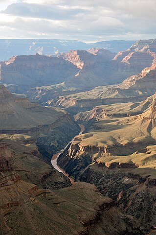
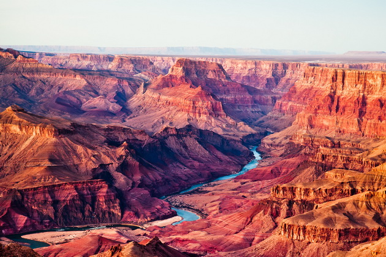
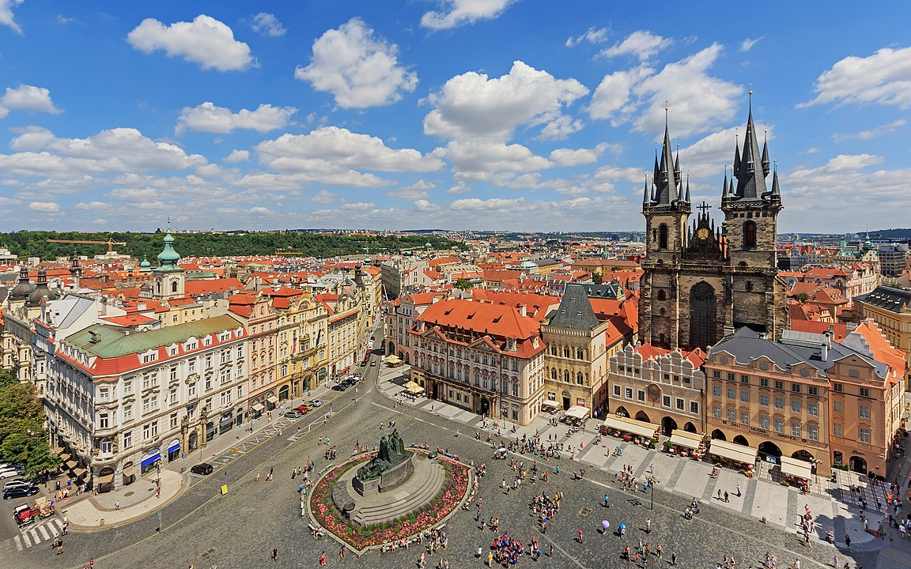

«Подорожі, обмежені тепершнім»
2019 рік був останнім, роком, коли ми могли вільно подорожувати. В 2020 році почалась пандемія, яка змусила нас закритись в чотирьох стінах, а з 2022 року війна, яка зламала всі плани, які були на майбутнє.
Іноді,ми хочемо заплющити очі і помріяти. А іноді, ми можемо заплющити очі і скласти невеликий список місць, які ми відвідаємо протягом життя. Планета Земля є неповторною планетою Сонячної системи, яка змогла поєднати в собі живий і не живий світ. Ми можемо спостерігати величезні кам'яні каньони і дикі джунглі Амазонки. Та ще одним дивом нашої планети є людина. Ми побудували неймовірні споруди, країни та вінцем нашого розвитку стало опанування думки. Я хотів би поділитись, які пісця нашої планети я хотів би відвідати.
Одним з найдивовижніших природних об'єктів є Гранд Каньйон на півдні США штату Аризона. Не дивлячись на свою назву, Гранд Каньйон не є ні найбільшим, ні найглибшим каньйоном, але його неймовірний рельєф, який сотнями років вимивався річною Колорадо, створив з нього справжнє природне диво.Гранд Каньйон – це не лише природне диво своєю величчю і красою, але й археологічний скарбниця, яка приховує в собі велику кількість слідів давніх цивілізацій. Більше того, це місце стало свідком еволюції природи, де кожен шар скелястої породи розповідає свою власну історію, відображаючи зміни в кліматі та середовищі протягом тисяч років. Гранд Каньйон – це справжня книга часу, яка розкриває перед нами таємниці минулого і надихає на подорож у світ природи і історії.
Гранд Каньйон має вражаючі розміри: він довжиною близько 446 кілометрів, шириною від 6,4 до 29 кілометрів і глибиною понад 1,6 кілометра. Не дивлячись на свою велич, він не є абсолютно найбільшим каньйоном за розмірами, проте вражає своєю масштабністю та красою. Гранд Каньйон складається з різних типів гірських порід, що відображає різні епохи геологічної історії. Найстаріші скельні формації належать до протерозою та палеозою (від 2,5 мільярдів до 250 мільйонів років тому) і складаються переважно з кристалічних порід, таких як граніт та гнейс. Молодші формації включають в себе вапняки, пісковики та сланці, які були утворені в мезозойському та кайнозойському періодах (від 250 мільйонів до 65 мільйонів років тому).
Прага, столиця Чеської Республіки, справді вражає своєю красою та архітектурою, що переплітається між середньовічними спорудами та бароковими палацами. Це місто, яке словно зберігло атмосферу минулих епох, переносячи нас у часи лицарів та королів. Прага славиться своїми історичними пам'ятками, серед яких варто відзначити Празький замок, який є одним з найбільших у світі, Староміську площу з астрономічним годинником та величезними середньовічними вежами, а також Карлов міст, що перетинає річку Влтаву. Вузькі вулички, обгорнуті історією, та кам'яні містечка просто манять до дослідження кожного кутка міста.
Кожен куточок Землі має щось особливе, що привертає до себе увагу подорожника. Іноді це можуть бути величні архітектурні споруди, які свідчать про витонченість людської майстерності та креативності. Іноді - це вражаючі природні ландшафти, які викликають в нас відчуття захоплення і величі. А може, це таємничі місця, сповнені загадковості та таємниці, які хочеться розгадати.Хоча вибір ідеального місця для відвідування може бути важким завданням через безліч варіантів, які представляє наша планета, я вирішив виокремити саме два місця, які, на мою думку, найкраще відображають це різноманіття: одне - природне диво, створене самою матір'ю-природою, а інше - рукотворне диво, яке свідчить про винахідливість та талант людини.
  